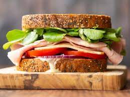

Ham Sandwiches

Ham sandwiches are one of the simplest and tastiest things you can make these days. The perfect blend of ham, cheese, veggies, mayonaise, and bread makes it one of my favorite foods to make at home, ot to mention you could probably whip one up in less than 10 minutes. In this recipe, I will teach you how to make a ham sandwich.
Ingredients:
- bread of choice
- ham
- cheese
- lettuce
- tomato
- mayonaise
- onions
Instructions:
- Cut out as much lettuce, onions, and tomatoes you will need. Get out cheese, ham, bread, and mayonaise
- add mayonaise on one side of the bread. Then stack ham, cheese, tomatoes, onions, and lettuce on bread to make a sandwich.
- Enjoy!
Back to home